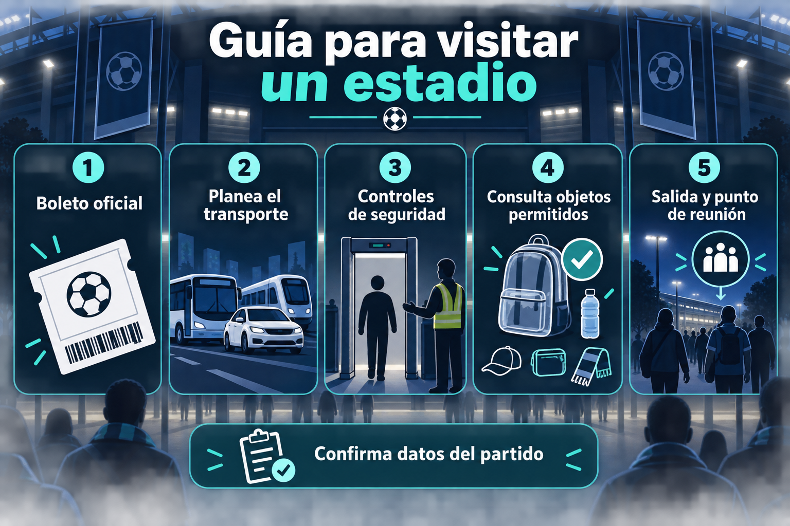

Antes de comprar un boleto
Compra sólo con el club, organizador o vendedor autorizado. Antes de pagar, confirma rival, fecha, horario, estadio, zona y condiciones de reembolso. Un partido puede cambiar de programación o sede.
Llegada y acceso al estadio
Planea tu transporte con margen. Las filas por revisión de boleto, controles de seguridad o identificación pueden aumentar cerca de la hora de inicio. Revisa en el boleto la puerta indicada y conserva una captura fuera de línea.
Objetos permitidos y seguridad
Cada inmueble publica reglas propias sobre bolsas, alimentos, cámaras, paraguas y otros artículos. Evita asumir que una política aplica en todas las sedes: consulta al club local antes de salir y sigue las indicaciones del personal autorizado.
Durante y después del partido
Ubica salidas y servicios al entrar; si vas acompañado, acuerden un punto de reunión. Al finalizar, las vialidades y el transporte suelen saturarse, por lo que conviene prever una ruta de salida y un tiempo adicional.